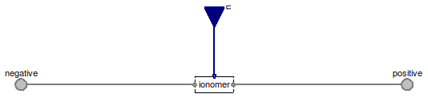

Table of Contents
- User's Guide
- Conditions
- Assemblies
- Regions
- Subregions
- Connectors
- Characteristics
- Units
- Quantities
- BaseClasses
Download
- Latest: FCSys-2.0.zip (**Please check back soon or contact kdavies4 at gmail.com.)

The hierarchy of these boundary condition models is similar to that of the models in the Conditions.FaceBus package. For more information, please see the documentation in that package.
Extends from Modelica.Icons.Package (Icon for standard packages).
| Name | Description |
|---|---|
| Subregion | Condition for faces of a Region or Subregion model, with efforts by default |
| SubregionFlow | Condition for faces of a Region or Subregion model, with flows by default |
| Conditions for the FaceBus connector, e.g., of a Phase model (multi-species) |

| Type | Name | Default | Description |
|---|---|---|---|
| Phases | |||
| Gas | gas | redeclare Phases.Gas gas | Gas |
| Graphite | graphite | redeclare Phases.Graphite gr... | Graphite |
| Ionomer | ionomer | redeclare Phases.Ionomer ion... | Ionomer |
| Type | Name | Description |
|---|---|---|
| FaceBus | negative | |
| RealInputBus | u | |
| FaceBus | positive |
model Subregion "Condition for faces of a Region or Subregion model, with efforts by default" extends FCSys.BaseClasses.Icons.Conditions.Double;replaceable Phases.Gas gas "Gas"; replaceable Phases.Graphite graphite "Graphite"; replaceable Phases.Ionomer ionomer "Ionomer"; FCSys.Connectors.FaceBus negative; FCSys.Connectors.RealInputBus u; FCSys.Connectors.FaceBus positive; equationconnect(gas.negative, negative.gas); connect(graphite.negative, negative.graphite); connect(ionomer.negative, negative.ionomer); connect(gas.positive, positive.gas); connect(graphite.positive, positive.graphite); connect(ionomer.positive, positive.ionomer); connect(u.gas, gas.u); connect(u.graphite, graphite.u); connect(u.ionomer, ionomer.u); end Subregion;
| Type | Name | Description |
|---|---|---|
| FaceBus | negative | |
| RealInputBus | u | |
| FaceBus | positive |
model SubregionFlow "Condition for faces of a Region or Subregion model, with flows by default" extends Subregion( gas( H2( redeclare replaceable FaceDifferential.Normal.Force normal, redeclare replaceable FaceDifferential.Transverse.Force transverse1, redeclare replaceable FaceDifferential.Transverse.Force transverse2, redeclare replaceable FaceDifferential.Thermal.HeatRate thermal), H2O( redeclare replaceable FaceDifferential.Normal.Force normal, redeclare replaceable FaceDifferential.Transverse.Force transverse1, redeclare replaceable FaceDifferential.Transverse.Force transverse2, redeclare replaceable FaceDifferential.Thermal.HeatRate thermal), N2( redeclare replaceable FaceDifferential.Normal.Force normal, redeclare replaceable FaceDifferential.Transverse.Force transverse1, redeclare replaceable FaceDifferential.Transverse.Force transverse2, redeclare replaceable FaceDifferential.Thermal.HeatRate thermal), O2( redeclare replaceable FaceDifferential.Normal.Force normal, redeclare replaceable FaceDifferential.Transverse.Force transverse1, redeclare replaceable FaceDifferential.Transverse.Force transverse2, redeclare replaceable FaceDifferential.Thermal.HeatRate thermal)), graphite('C+'( redeclare replaceable FaceDifferential.Normal.Force normal, redeclare replaceable FaceDifferential.Transverse.Force transverse1, redeclare replaceable FaceDifferential.Transverse.Force transverse2, redeclare replaceable FaceDifferential.Thermal.HeatRate thermal), 'e-'( redeclare replaceable FaceDifferential.Normal.Force normal, redeclare replaceable FaceDifferential.Transverse.Force transverse1, redeclare replaceable FaceDifferential.Transverse.Force transverse2, redeclare replaceable FaceDifferential.Thermal.HeatRate thermal)), ionomer( 'C19HF37O5S-'( redeclare replaceable FaceDifferential.Normal.Force normal, redeclare replaceable FaceDifferential.Transverse.Force transverse1, redeclare replaceable FaceDifferential.Transverse.Force transverse2, redeclare replaceable FaceDifferential.Thermal.HeatRate thermal), H2O( redeclare replaceable FaceDifferential.Normal.Force normal, redeclare replaceable FaceDifferential.Transverse.Force transverse1, redeclare replaceable FaceDifferential.Transverse.Force transverse2, redeclare replaceable FaceDifferential.Thermal.HeatRate thermal), 'H+'( redeclare replaceable FaceDifferential.Normal.Force normal, redeclare replaceable FaceDifferential.Transverse.Force transverse1, redeclare replaceable FaceDifferential.Transverse.Force transverse2, redeclare replaceable FaceDifferential.Thermal.HeatRate thermal)));end SubregionFlow;